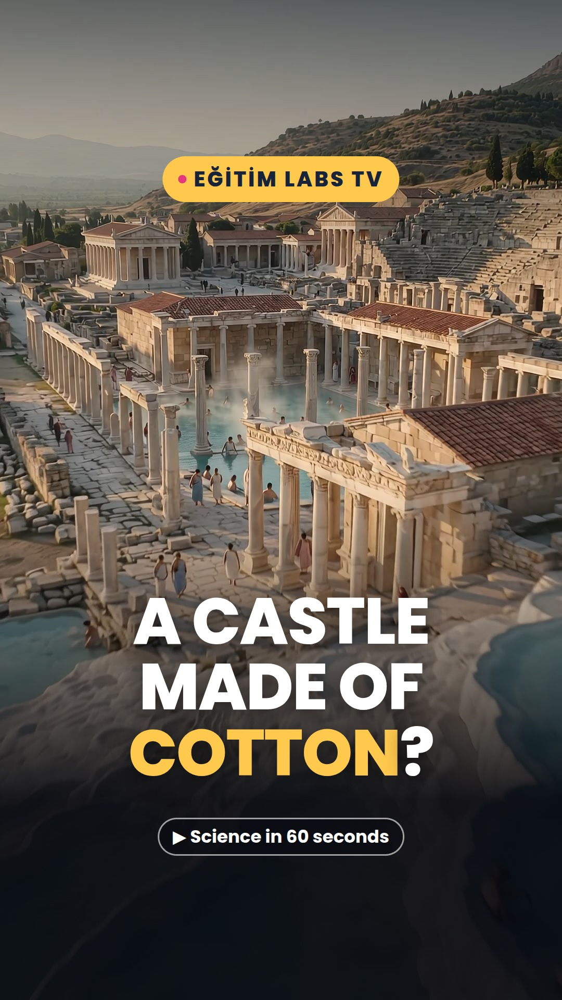

62.08 sn · 9:16 · ses: Gemini Algieba · Türkçe altyazı videoya gömülü
🇹🇷 It looks like a frozen waterfall, but the water is warm and the white is solid stone. Meet Pamukkale. 👇 Donmuş bir şelale gibi görünüyor ama suyu sıcak, beyazı ise katı taş. Karşınızda Pamukkale. Follow @egitimlabs.official for more · Daha fazlası için takip et #Pamukkale #Hierapolis #Türkiye #DidYouKnow #Science #EğitimLabsTV
This 'Frozen Waterfall' in Türkiye Is Made of Stone 🇹🇷 #shorts
